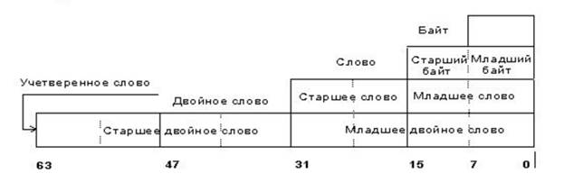

электронный ресурс по учебной дисциплине 1-40 05 01-09 "Информационные системы и технологии (в обеспечении промышленной безопасности)"
|
||
| Оглавление | Программа | Теория | Практика | Контроль знаний | Об авторах | ||
| Практика
Индивидуальная практическая работа №1 ТИПЫ ДАННЫХ. СПОСОБЫ АДРЕСАЦИИ ДАННЫХ. Цель работы: знакомство с типами данных, научиться использовать типы данных, приобрести практические навыки способов адресации. Теоретические сведения 1. Типы данных С точки зрения размерности микропроцессор
аппаратно поддерживает такие типы данных.
 На уровне команд процессор поддерживает
такую логическую интерпретацию перечисленных типов данных Целый тип со знаком (8,16,32 бит) Первый бит — знаковый: 0(положительное),
1(отрицательное) Отрицательное число хранится в
дополнительном коде · Байт(-128;127) · Слово(-32768;
37767) · Двойное слово(〖-2〗^31;2^31-1) Целый тип без знака · Байт(0;255) · Слово(0;65535) · Двойное слово(0,
2^32-1) Указатели на память · Ближний тип 16 или 32 разрядный логический адрес,
представляющий собой относительное смещение в байтах от начала сегмента · Дальний тип 32(48) разрядный логический адрес,
состоящий из 2 частей – 16 разрядной сегментной части и 16(32) разрядного
смещения Цепочка – непрерывный
набор байтов, слов, двойных слов Битовое
поле
– непрерывная последовательность битов, каждый бит – независимый, может
рассматриваться отдельно Неупакованный
двоично-десятичный тип – байтовое представление десятичных цифр от 0 до 9.
Они хранятся как байтовое значение без знака по 1 цифре в каждом байте. Упакованный
двоично-десятичный тип – каждая цифра хранится в своем полубайте, цифра в
старшем полубайте — старшая. Типы
данных с плавающей точкой Секции .data, .data? и .const нужны
для определения данных программы. Место под данные резервируется с помощью
директив db, dw, dd, dq, dt. db - 1 байт dw - 2 байта - 1 слово dd - 4 байта - 2 слова dq - 8 байт - 4 слова dt - 10 байт Секция .data наиболее универсальная
мы резервируем память под данные и сразу же инициализируем их, т.е. задаём им
начальные значения. Все данные из этой секции включаются в исполнимый файл.
Секция .data? менее гибкая, так как данные нельзя инициализировать. Все данные
в этой секции не включаются в исполнимый файл, поэтому место только
резервируется, но начальные значения не задаются. Данные в обеих секциях имеют
полный режим доступа. Секция .const предназначена только чтения. .data Perem dd 0000FF11h X1 dw
01235h Binary db
00111010b dd 11225599h decimal dw
28d large dq 01123456789ABCDEFh dw 1011100101010111b .data? Perem1 dd ? Perem2 dq ? Perem5 dw ? Dd ? Dw ? Perem4 db ? ..const Const1 dd
012345678h dw 768d Строки В ассемблере можно задавать только
ANSI строки, Unicode строки сложнее задавать и для их обработки существует
целый ряд API функций. В ассемблере также можно вместо присваивания
однобайтовой переменной некоторого числа можно присвоить переменно букву. Но, в
конечном счете, эта переменная будет равна коду буквы в кодировке ANSI. При
инициализации символа можно использовать и кавычки и апострофы - без разницы. .data Char1 db 'W' Char2 db 'Й' db
"r" Всё выше написанное тоже самое что и: .data Char1 db 57h Char2 db
0C9h db 72h При объявлении строк можно просто написать строку
после директивы db. Это воспринимается как последовательность символов String db "ASM" Тоже самое: String db
'A' Db "S" Db "M" Тоже самое: String db
41h Db 53h Db 4Dh Тоже самое: String db
41h, 53h, 4Dh При передаче строк функциям в качестве параметров надо
чтобы в конце строки был 0, для того чтобы функция смогла найти конец строки. String db
"ASM",0 Msg db "First ASSEMBLER program",0 Ttl db 'Hello, World!!!!',0 Заполнение данными. Иногда нужно описать много одинаковых переменных
примерно штук 30. Вы будете делать так db 0,0,0,0,0,0,0,0,0,0,0,0,0,0,0,0,0,0,0,0,0,0,0,0,0,0,0,0,0,0
; 30 раз Это неудобно и некрасиво, тем более можно ошибиться
при подсчете. Для таких случаев сделана директива DUP. db 30 DUP (0)
; тот же результат в скобках указываем, чем надо заполнять, можно использовать
символы в кавычках, обязательно чтобы размер в скобках совпадал с директивой. Примеры: Dd 10 DUP
("в") Dw 45h DUP
(0DF23h) Dd 100b DUP (12345678h) Для задания размеров, содержимого и
местоположения полей данных, используемых в программе на языке
ассемблера, служат директивы определения данных. Директивы определения данных могут
задавать: - скалярные данные; - записи, позволяющие
манипулировать с данными на уровне бит; - структуры, отражающие
некоторую логическую структуру данных. Для определения области памяти под скалярные данные можно использовать
директивы DB, DW, DD, DF, DP, DQ, DT. Они позволяют выделить и инициализировать память следующего типа и
размера: DB – 1 байт для данного; DW – 2 байта или слово для данного или смещения в памяти; DD – 4 байта или двойное слово для данного или адреса памяти; DF, DP – 6-байтный указатель типа far (дальний); DQ – 8 байт для данного; DT – 10 байт для данного. Например: my_byte DB 25 ; в выделенный байт записано
значение 25 my_word DW 1000 ; в выделенное слово записано
значение 1000 В качестве значения может
кодироваться целое число, строковая константа, оператор DUP (см. ниже),
абсолютное выражение или знак «?». Знак «?» обозначает неопределенное
значение. Значения, если их несколько, должны разделяться запятыми.
Если директива имеет имя, создается переменная указанного типа с
соответствующим данному значению указателя позиции смещением. Если в одной директиве определения памяти
заданы несколько значений, им распределяются последовательные байты
памяти. В этом случае, имя, указанное в начале директивы, именует только первый
из этих байтов, остальные остаются безымянными. Для ссылок на них используется
выражение вида имя+k, где k – целое число. Для определения ASCII-кода символа этот символ необходимо заключить в
одинарные или двойные кавычки, например my_byte DB ‘A’ ; в выделенный байт
записан ASCII-код буквы А Строковая константа может содержать
столько символов, сколько помещается на одной строке. Символы строки хранятся в
памяти в порядке их следования, т.е. 1-й символ имеет самый младший
адрес, последний - самый старший. Во всех директивах определения памяти в
качестве одного из значений может быть задан оператор DUP. Он имеет
следующий формат: счетчик DUP (значение,...) Указанный в скобках список значений
повторяется многократно в соответствии со значением счетчика.
Каждое значение в скобках может быть любым выражением, имеющим
значением целое число, символьную константу или другой оператор DUP (допускается
до 17 уровней вложенности операторов DUP). Значения, если их несколько,
должны разделяться запятыми. Оператор DUP может использоваться не
только при определении памяти, но и в других директивах. Примеры директив определения скалярных
данных: integer1
DB 25 string1 DB
'ABCDEff' empty1
DB ? contan2
DW 5*3 string3
DB 'abcd' high4
DQ 18446744073709551615 high5
DT 1208925819614629174706175d db6
DB 5 DUP(5 DUP(5 DUP(10))) dw6 DW DUP(1,2,3,4,5) Данные могут быть заданы в десятичной,
двоичной, восьмеричной и шестнадцатеричной формах. Каждая форма задается
определенным суффиксом в конце числа. Десятичные значения задаются без суффикса
или с суффиксом d, двоичные значения задаются с суффиксом b, восьмеричные – с суффиксом о или q, шестнадцатеричные – с суффиксом h и должны начинаться с одной из цифр от 0
до 9. Например: _bb DB 10011101b _ww DW 1234o _dd DD 12345678h mov ax, 10000 mov bx, 10000d my_array DW 0,1,2,3,4,5,6,7,8,9 Последняя строка выделяет десять слов
памяти и записывает в них значения от 0 до 9. Метка my_array определяет смещение начала этой области в сегменте .DATA. Допускается инициализация блоков памяти одними и
теми же значениями. Block_array DW 100 DUP (12h) Здесь выделяется память размером 100 слов,
в каждое слово помещается значение12h, и метка Block_array хранит смещение этой области в сегменте .DATA. sym_array DB 10 DUP (“5”) my_string DB
‘a’,’b’,’c’,’d’,’e’,’f’,0dh,0ah,’$’ Или my_string DB
‘abcdef’,0dh,0ah,’$’ В качестве начальных значений элементов
данных наряду с константами можно использовать выражения и метки, например my_exp DB –((5*4)/2+1) ; в байте будет
задано значение –11. В тех случаях, когда необходимо выделить
память, но не инициализировать ее, используется знак ?, например my_example DW 20 DUP (?) no_init DD ? Запись представляет собой набор полей бит, объединенных одним именем.
Каждое поле записи имеет собственную длину, исчисляемую в битах, и не
обязано занимает целое число байтов. Объявление записи в программе
на языке ассемблера включает в себя 2 действия: - объявление шаблона или
типа записи директивой RECORD; - объявление собственно
записи. Формат директивы RECORD: имя_записи RECORD имя_поля:длина[[=выражение]],... Директива RECORD определяет вид 8- или
16-битовой записи, содержащей одно или несколько полей. Имя_записи
представляет собой имя типа записи, которое будет использоваться при
объявлении записи. Имя_поля и длина (в битах) описывает конкретное поле записи.
Выражение, если оно указано задает начальное (умалчиваемое) значение
поля. Описания полей записи в директиве RECORD, если их несколько, должны
разделяться запятыми. Для одной записи может быть задано любое число
полей, но их суммарная длина не должна превышать 16 бит. Длина каждого поля задается
константой в пределах от 1 до 16. Если общая длина полей превышает 8 бит,
ассемблер выделяет под запись 2 байта, в противном случае – 1 байт.
Если задано выражение, оно определяет начальное значение поля. Если длина поля
не меньше 7 бит, в качестве выражения может быть использован символ в
коде ASCII. Выражение не должно содержать ссылок вперед. Пример: item RECORD char:7='Q',weight:4=2 Запись item будет иметь следующий вид:
При обработке директивы RECORD формируется
шаблон записи, а сами данные создаются при объявлении записи,
которое имеет следующий вид: [[имя]] имя_записи <[[значение,...]]> По такому объявлению создается переменная
типа записи с 8- или 16-битовым значением и структурой полей,
соответствующей шаблону, заданному директивой RECORD с именем имя_записи.
Имя задает имя переменной типа записи. Если имя опущено, ассемблер
распределяет память, но не создает переменную, которую можно было бы
использовать для доступа к записи. В скобках <> указывается список
значений полей записи. Значения в списке, если их несколько, должны
разделяться запятыми. Каждое значение может быть целым числом,
строковой константой или выражением и должно соответствовать длине
данного поля. Для каждого поля может быть задано одно значение.
Скобки <> обязательны, даже если начальные значения не заданы.
Пример: table item 10 DUP(<'A',2>) Если для описания шаблона записи
использовалась директива RECORD из предыдущего примера, то по этому
объявлению создается 10 записей, объединенных именем table. Структура представляет собой набор
полей байтов, объединенных одним именем. Объявление структуры, аналогично
объявлению записи, включает в себя 2 действия: - объявление шаблона или
типа структуры; - объявление собственно
структуры. Формат объявления типа структуры: имя STRUC описания_полей имя ENDS Директивы STRUC и ENDS обозначают
соответственно начало и конец описания шаблона (типа) структуры.
Описание типа структуры задает имя типа структуры и число, типы и
начальные значения полей структуры. Описания_полей определяют поля структуры и
могут быть заданы аналогично описанию скалярных типов. Пример: table STRUC
count DB 10
value DW 10 DUP(?) tname
DB 'font' table ENDS При обработке директив STRUC и ENDS
формируется шаблон структуры, а сами данные создаются при объявлении
структуры, которое имеет следующий вид: [[имя]] имя_структуры <[[значение,...]]> Значения полей в объявлении структуры
аналогично значению полей при объявлении записи. Константы в языке Ассемблера описываются с
помощью директивы эквивалентности EQU, имеющей следующий синтаксис: <имя> EQU <операнд> Здесь обязательно должно быть указано имя
и только один операнд. Директивой EQU автор программы заявляет, что указанному
операнду он дает указанное имя, и требует, чтобы все вхождения этого имени в
текст программы ассемблер заменял на этот операнд. Директиву EQU можно ставить
в любое место программы. 2. Способы адресации В архитектуре MIPS
используются
пять режимов адресации: регистровый (англ.: register-only), непосредственный (англ.: immediate),
базовый (англ.: base), относительно счетчика
команд (англ.: PC-relative) и псевдопрямой (англ.: pseudo-direct). Первые три режима
(регистровый, непосредственный и базовый) определяют способы чтения и записи
операндов. Последние два (режим адресации относительно счетчика команд и
псевдопрямой режим) определяют способы записи счётчика команд (англ.: program
counter, PC). При регистровой адресации регистры
используются для всех операндов-источников и операндов-назначений (иными
словами – для всех операндов и результата). Все инструкции типа R используют
именно такой режим адресации. При непосредственной адресации в качестве
операндов наряду с регистрами используют 16-битные константы (непосредственные
операнды). Этот режим адресации используют некоторые инструкции типа I, такие
как сложение с константой (addi) и загрузка константы в старшие 16 бит регистра
(lui). Инструкции для доступа в память, такие как
загрузка слова (lw) и сохранение слова (sw), используют базовую адресацию.
Эффективный адрес операнда в памяти вычисляется путем сложения базового адреса
в регистре rs и 16-битного смещения с расширенным знаком, являющегося непосредственным
операндом. Инструкции условного перехода, или
ветвления, используют адресацию относительно счетчика команд для определения
нового значения счетчика команд в том случае, если нужно осуществить переход.
Смещение со знаком прибавляется к счетчику команд (PC) для определения нового
значения PC, поэтому тот адрес, куда будет осуществлен переход, называют
адресом относительно счетчика команд. При прямой адресации адрес перехода
задаётся внутри инструкции. Инструкции безусловного перехода j и jal в идеале
могли бы использовать прямую адресацию для определения 32-битного целевого
адреса перехода (англ.: jump target address, JTA), указывающего адрес
инструкции, которая будет выполнена следующей. К сожалению, в формате
инструкций типа J нет достаточного количества бит для того, чтобы задать полный
32-битный адрес перехода. Шесть старших бит инструкции занимает код операции
(поле opcode), поэтому для адреса перехода остаётся только 26 бит. К счастью,
два младших бита адреса перехода (JTA1:0) всегда должны быть равны нулю, потому
что все инструкции выровнены по словам. Следующие 26 бит адреса перехода
(JTA27:2) берутся из поля addr инструкции. Четыре старших бита адреса перехода
(JTA31:28) берутся из четырёх старших бит значения PC + 4. Такой способ
адресации называется псевдопрямым.
Большинство команд процессора содержит аргументы, которые принято называть
операндами. Существующие способы задания адресов хранения операндов называются
способами адресации. Все способы адресации данных можно отнести к одной из
следующих групп: Непосредственная адресация, прямая
адресация, регистровая адресация, косвенная регистровая адресация,
относительная косвенная регистровая адресация, базовая индексная адресация,
неявная адресация. Непосредственная адресация. Здесь операнд является
частью команды. Операнд помещается в последние байты команды, причем младший
байт располагается по меньшему адресу, то есть следует первым. mov AX, 1234h Здесь шестнадцатеричное значение (признаком шестнадцатеричного числа
является буква h) 1234 помещается в регистр AX МП. Младший байт операнда в команде будет
содержать значение 34, а старший – 12. Прямая адресация. Здесь смещение данного является частью
команды.
mov AX, my_label В регистр AX помещается смещение метки my_label, которое содержится в
самой команде. Регистровая адресация. Операнд находится в одном из регистров
общего назначения или в одном из сегментных регистров. Имя регистра
задается в самой команде.
mov AX, BX Здесь значение из регистра BX передается в регистр AX. Косвенная регистровая адресация. Смещение данного
находится в одном из регистров BX, SI, DI, BP. Напомним, что для каждого регистра, содержащего смещение, существует
сегмент, заданный по умолчанию. mov AX, [BX] Выполняются следующие действия: читается
значение из регистра BX, которое рассматривается как смещение в памяти в сегменте данных, по
полученному смещению из памяти считывается слово, которое помещается в регистр AX. Если задан префикс замены CS, команда перепишется в виде:
mov AX, CS:[BX] Здесь выполняются те же действия, но смещение второго операнда берется в
сегменте кода. Относительная косвенная регистровая адресация. Смещение данного вычисляется как сумма смещения в команде и значения в
одном из регистров BX, SI, DI, BP.
mov AX, [BX+10] Здесь смещение данного в сегменте DS определяется суммой значений из регистра BX с числом 10. Можно использовать еще две
формы записи этой же команды:
mov AX, [BX]+10
mov AX, 10[BX] Этот способ адресации называют также
базовым, если используются базовые регистры BX,BP и индексным, если используются индексные регистры SI, DI. Базовая индексная адресация. Смещение данного
вычисляется как сумма значений в базовом регистре BX или BP, в индексном регистре SI или DI и смещения в команде. В частном случае
смещение может отсутствовать. Этот способ удобно использовать для обращения к
элементам двумерных массивов.
mov AX, my_array[BX][SI] Здесь my_array можно рассматривать как адрес начала
массива. Неявная адресация. В этом случае адреса объектов неявно
задаются кодом операции. Например, в строковых командах неявно используются регистры SI, DI. Если в инструкциях процессора указываются
регистры в квадратных скобках, например MOV AX,A[BX], то в этом случае
команда работает с так называемым исполнительным адресом который вычисляется по
формуле AИСП=(A+[BX]) mod 216, где [BX] обозначает содержимое регистра BX. То есть процессор, прежде чем выполнить команду,
прибавит к адресу А, указанному в команде, текущее содержимое BX, получит некоторый новый адрес и из ячейки с этим
адресом возьмет второй операнд. Если в результате суммирования получилась сумма
большая 65535, то от нее берутся только последние 16 бит (на это указывает mod в приведенной формуле). Подобная замена адреса из команды на
исполнительный адрес называется модификацией адреса, а регистр, участвующий в
модификации – регистром-модификатором. В качестве регистра-модификатора можно
использовать не любой регистр, а лишь один из следующих: BX, BP, SI и DI. Анализ реальных программ на языке
Ассемблера, позволяет сделать вывод, что в них, в большинстве случаев,
указываются адреса лишь из трех областей памяти – сегмента кода, сегмента
данных и сегмента стека. Например, в командах перехода всегда указываются
адреса других команд, т.е. ссылки на сегмент кода. В командах работающих со
стеком указываются адреса из сегмента стека. В остальных же командах
(пересылках, арифметических и т.д.) указываются, как правило, адреса из
сегмента данных. С учетом этой особенности реальных программ принят ряд
соглашений, которые позволяют во многих командах не указывать явно сегментные
регистры, а подразумевать их по умолчанию. Для этого необходимо, чтобы
начальные адреса сегментов памяти находились в определенных регистрах, а
именно: регистр CS должен указывать на
начало сегмента кода, регистр DS – на начало сегмента данных, а регистр SS – на начало сегмента стека. Таким образом,
адреса переходов всегда сегментируются по регистру CS; во всех остальных инструкциях, если адрес в команде
не модифицируется или если он модифицируется, но среди модификаторов нет
регистра BP, то этот адрес считается ссылкой в сегмент данных и сегментируется по
регистру DS; если же адрес модифицируется по регистру BP, то он считается ссылкой в сегмент стека и поэтому по
умолчанию сегментируется по регистру SS. В случае если приходится работать с
сегментами памяти, отличными от сегментов кода, стека или данных, в
командах, содержащих ссылку на эти сегменты, необходимо явно указывать
сегментный регистр. Например: MOV AX, ES:[BX]. [1] [Электронный
ресурс]. – Режим доступа: http://indigobits.com/assembler/5-tipy-dannyx-s-kotorymi-rabotaet-processor.html [2] [Электронный
ресурс]. – Режим доступа: http://indigobits.com/assembler/9-rezhimy-adresacii-ogranicheniya-na-ispolzovanie-rezhimov-adresacii.html [3] http://www.codenet.ru/progr/asm/newbee/lesson5.php [4] Дэвид Харрис, Сара Харрис. Цифровая
схемотехника и архитектура компьютера, 2-е издание, перевод командой компаний и
университетов России, Украины, США и Великобритании, Morgan Kaufman, 2013. – 1621 с. [5] И.В. Лукьянова. Конспект лекций по
курсу «Конструирование программ и языки программирования» часть 2 Язык
программирования ассемблер, Минск, 2006. – 78 с. Для получения
задания на работу обратиться к преподавателю.
|
| (С) БГУИР |